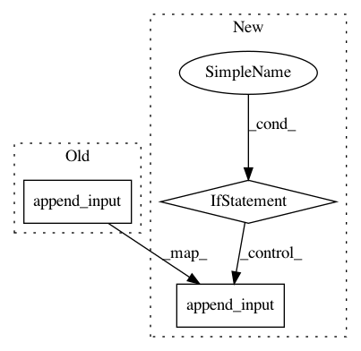

8755c48bb903005a7e819998d51ba41ba892814f,src/graph_builder/frontend/sub_rules/concat_affine.py,ConcatAffine,_compress_sequence,#ConcatAffine#Any#,104
Before Change
const_bias = ConstantVariable(merged_bias, OrderC)
bias_op = AxiswiseBias(conv_op.name + "_tail_bias", axis=Axis.C)
bias_op.append_input("x", conv_out)
bias_op.append_input("b", const_bias)
bias_op.append_output("y", final_out)
After Change
conv_weight_var.data *= merged_scale[broadcast]
final_out = seq[-1].outputs["y"]
if bias_found:
// Scale/Biasレイヤーを削除して、新しいBiasレイヤーを元々の出力につなぐ
for op in seq[1:]:
op.remove_all()
const_bias = ConstantVariable(merged_bias, OrderC)
bias_op = AxiswiseBias(conv_op.name + "_tail_bias", axis=Axis.C)
bias_op.append_input("x", conv_out)
bias_op.append_input("b", const_bias)
bias_op.append_output("y", final_out)
else:
// Biasはないので、Convレイヤーの出力がブロック全体の出力になる
for op in seq[1:]:
op.remove_all()
conv_op.remove_output(conv_out)
conv_op.append_output("y", final_out)
In pattern: SUPERPATTERN
Frequency: 3
Non-data size: 3
Instances
Project Name: mil-tokyo/webdnn
Commit Name: 8755c48bb903005a7e819998d51ba41ba892814f
Time: 2017-05-07
Author: hidaka@mi.t.u-tokyo.ac.jp
File Name: src/graph_builder/frontend/sub_rules/concat_affine.py
Class Name: ConcatAffine
Method Name: _compress_sequence
Project Name: mil-tokyo/webdnn
Commit Name: 27d5a01fbc073d0543b057dcf61a9f111d468157
Time: 2017-06-29
Author: y.kikura@gmail.com
File Name: src/graph_transpiler/webdnn/graph/operators/lstm.py
Class Name: LSTM
Method Name: __call__
Project Name: mil-tokyo/webdnn
Commit Name: 69e63361f5eb9e1a8aa85c409f3d32b2f75cc91a
Time: 2017-05-05
Author: y.kikura@gmail.com
File Name: src/graph_builder/backend/webgpu/optimize_rules/sub_rules/concat_sgemm_bias.py
Class Name: ConcatSgemmBias
Method Name: optimize